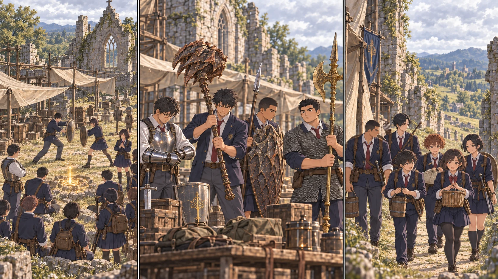

DAY72 / TURN1−82
留守を預ける、ということ。

結衣「帰ってきたときの点呼は、私が取ります」
【DAY72｜教会】朝倉結衣は、遠征の名簿とは別の紙を先生の前へ置いた。教会に残る十四人。水場へ出る六人。その六人が戻らない時間帯の見張りと、食事の当番まで書いてある。「一つ確認。物資の人がいない間、誰が裏を見ますか」。自分の名前を増やせば済む、と考えかけたところで、先生が紙を押さえた。
「その前に、君たちを強くする」。残留組十四人を、全員レベル十五へ。千二百六十ルーンを先に分けた。手元に残った分を配るのではなかった。皆が見ている前で、最初の袋を教会の側へ置く。結衣は当番表を持ったまま、一度だけ目を伏せた。
祝福の光が消えても、壊れた壁が直るわけではない。誠はいつもと同じ石を運び、途中で息を整える回数が減ったことに気づいた。隼人は刀を振るより先に、裏口から荷車までを走った。「二人で行けるな」。昨日までは一人で守ろうとしていた場所に、交代の印をつけた。
颯も力を受け取った。左の鎖骨に残る細い傷は消えなかった。先生が何か言うより先に、颯は袖を直して頷いた。「夜の点呼、途中からなら持てます。次は誰が支えるか、決めておけば」。出陣を申し出たのではない。その違いを、先生は大事にした。「結衣と交代だ。無理なら戻していい」。
続いて主力十三人へ、六千六百二十ルーン。先生は五十三、直人は三十八、大地は四十、健太は四十四へ。残る九人も三十五まで引き上げた。今回優先したのは生命力と持久力だった。新しい術を際限なく撃つための強化ではない。詠唱が途切れても、転んでも、次の一歩を残すためのものだった。
直人が大竜爪を持ち上げ、止めた。軽く感じるからといって、味方の頭上で振れる武器にはならない。大地が黄金のハルバードの穂先を下げる。二人は教会の外に線を引き、先生が後退したとき、同じ穴へ同時に入らない練習をした。健太は竜爪の盾を地面へ立てかけず、構えたまま三歩下がった。今度は腕の様子を、自分から確かめている。
紬が先生の背後から声をかけた。「回復のとき、ここへ戻ってきてください」。置いた小石まで数歩。敵が追ってくれば使えない場所だ。だから陽太が一人で壁になるのではなく、直人と先生が順に視線を引き受ける。術は使わず、詠唱に必要な時間を想定して、全員で一度、黙って数えた。
物資C隊の凛は、その横で空の袋を畳んでいた。「強くなると、お腹も余計に空くのかな」。誰も確かな答えは持っていない。湊が肩をすくめる。「とりあえず、帰ってきて食べる人数は変えないで」。軽い言い方だったが、先生は冗談では返さなかった。「そうするために使った」。
【物資C隊｜2d6＝2・3、連携＋4、合計9】午後、C隊は戻ってきた。昨日より獲物が少ない。草に残る足跡を追えば、もう一頭は見つかったかもしれない。翼は道の分岐で止めた。湊の回復が増えたからといって、帰り道の知らない森へ進む理由にはならない。鹿二頭分、二十四人分の食料。狩りの後に取水を二往復し、明るいうちに教会の門をくぐった。
凛は袋の重さを、隠さず結衣へ伝えた。昨日ほどではない、と言う前に、結衣が六人の顔を数える。「了解。明日の見積もりは二十四で置く」。大漁の日を普通の日にしない。その当たり前を、皆で覚え始めていた。
点検した主用装備は、今すぐ修理するほど傷んでいない。買い足しは見送り、残った千八百六十五ルーンを予備に残す。夕食を配ると食料は七十五人分。航の矢は六本減り、全体で三百三十六本となった。
夜、先生は結衣へ教会の名簿を返した。「明日は大聖堂から先へ行く。こちらの状況は、帰ってくるまで分からない。判断を任せる」。結衣は聞きたいことを一つずつ確かめてから、紙を自分の側へ寄せた。「帰ってきたときの点呼は、私が取ります」。
先生は頷いた。自分が最後までそこに立つことと、自分がいなくても立っていられる人を育てること。その両方が必要なのだと、ようやく身体で分かりかけていた。
今回の判定記録
抽選前の条件 · 抽選結果